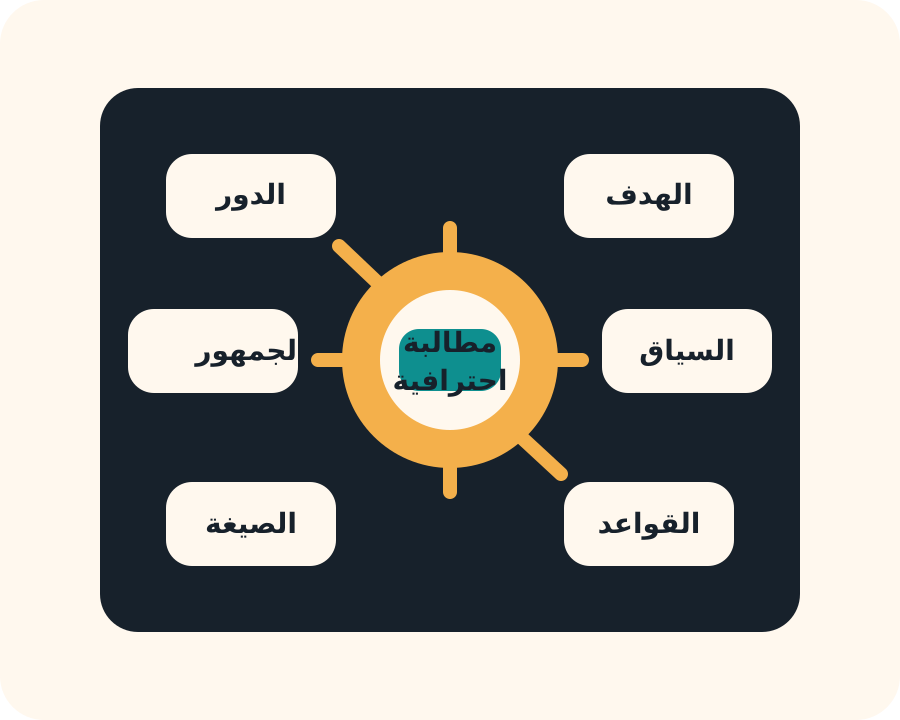
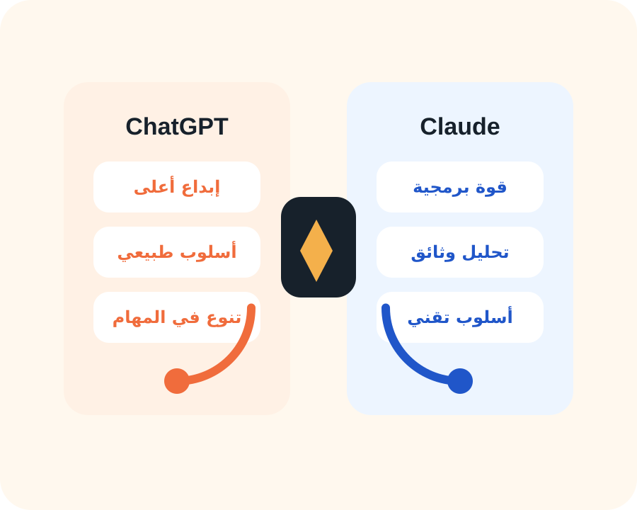

#1 ملخص الجلسة
الفكرة الأساسية
عالم الذكاء الاصطناعي مليء بالأدوات، لكن التميز الحقيقي لا يأتي من معرفة اسم الأداة فقط، بل من معرفة المهمة المناسبة لها، ثم كتابة مطالبة تصف المطلوب بوضوح وذكاء.
جلسة تدريبية مبسطة ومركزة
هذه الصفحة تحوّل ملخص الجلسة إلى تجربة مرئية عربية تجمع بين الشرح السريع، المراجعة العملية، والرسومات التوضيحية حتى يصبح الفهم أسهل والتذكر أقوى.
#1 ملخص الجلسة
عالم الذكاء الاصطناعي مليء بالأدوات، لكن التميز الحقيقي لا يأتي من معرفة اسم الأداة فقط، بل من معرفة المهمة المناسبة لها، ثم كتابة مطالبة تصف المطلوب بوضوح وذكاء.
لا تبحث عن الأداة الأفضل بشكل مطلق، بل عن الأداة الأنسب للسياق، الوقت، ونوع الناتج الذي تحتاجه.
ChatGPT
تم عرض ChatGPT كخيار مرن يجمع بين الإبداع والتحليل والكتابة والبرمجة بدرجة متوازنة، لذلك يبرز عندما تكون المهمة متعددة الجوانب.

Prompt Engineering
كلما كانت المطالبة أوضح وأكثر تنظيمًا، اقتربت النتيجة من الصورة التي يتخيلها المستخدم. هذه هي العناصر الأساسية التي تم شرحها في الجلسة:
خطوة ذكية
اكتب فكرتك الأولية بشكل بسيط.
اطلب من ChatGPT إعادة صياغتها كمطالبة احترافية.
انقل النسخة المحسنة إلى أداة الصور أو الفيديو أو غيرها.
قارن النتائج وكرر التحسين حتى تصل للجودة المطلوبة.
Claude
عند التعامل مع ملفات تقنية كبيرة، عقود، أو مستندات تتطلب قراءة منظمة، يظهر Claude كأداة متخصصة وفعالة، لكن استخدامه المكثف قد يكون أعلى تكلفة نسبيًا.
مقارنة سريعة
المقارنة هنا ليست لتحديد فائز مطلق، بل لمساعدتك على اختيار الأداة حسب نوع العمل المطلوب.

تنبيه مهم
قد يعاني ChatGPT أحيانًا من أخطاء أو هلوسة عند تحليل ملفات كبيرة جدًا، لذلك لا يُنصح بالاعتماد الكامل على النتائج في المستندات الحساسة دون مراجعة بشرية.
التعلم بالتجربة
الاستخدام الذكي
مناسبة للتجربة الأولى، اختبار الفكرة، وفهم سلوك الأداة.
استخدمها بعد تحسين المطالبة، خاصة في المشاريع النهائية عالية القيمة.
الجلسة القادمة
تم التمهيد لأداة ستُشرح لاحقًا، وتتميز بقدرتها على تحويل الصور إلى فيديو، مزامنة حركة الشفاه مع الصوت، وإنتاج شخصيات ناطقة بشكل واقعي.
أهم الرسائل المستفادة
وزّع المهام حسب قوة كل أداة بدلًا من البحث عن حل واحد لكل شيء.
ممتاز للمحتوى، إدارة المشاريع، والتحسين الذكي للمطالبات.
يتألق عند التعامل مع الأكواد والملفات الطويلة والمواد التقنية.
كلما كانت المطالبة أوضح، كانت النتيجة أقرب لما تريده بالفعل.
التكرار والمقارنة والتعديل هي الطريق الطبيعي للاحتراف.
خصوصًا عند تحليل ملفات كبيرة أو اتخاذ قرارات مهمة بناءً على المخرجات.